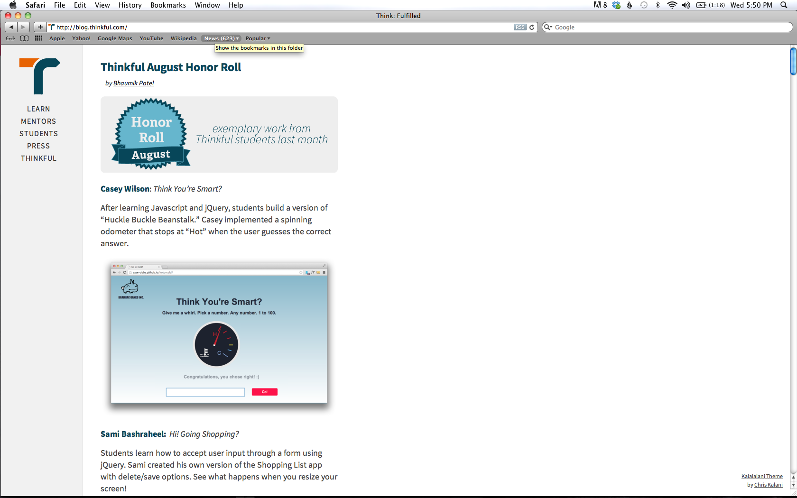
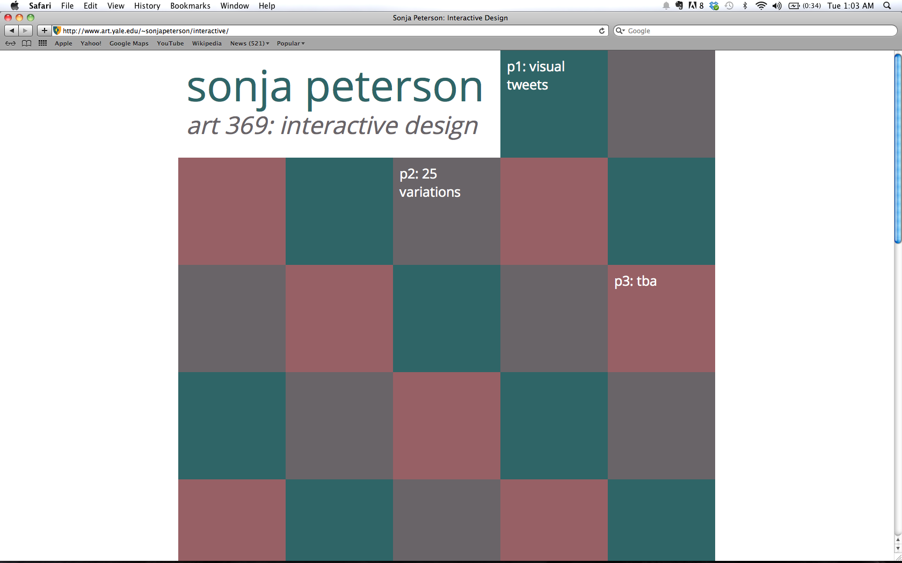

Design and Web Development
Thinkful Blog Redesign and Social Media Design
While working as a marketing intern at Thinkful in the summer of 2013, I redesigned their blog with a customized CSS Tumblr theme. I also created graphics for the blog using Adobe Illustrator. See more of my graphic design work for Thinkful here.
ART 369: Interactive Design
This spring semester one of my courses is Interactive Design with Laurel Schwulst at the Yale School of Art. My class portfolio is in-progress and will be updated throughout the semester. The project I'm currently working on is creating a responsive tutorial website for Yale students in introductory writing classes. Another ongoing project involves tweeting an image created with Photoshop or Illustrator five times a week. The assignment was to choose a well-known Twitter user and make images that included the text of a tweet and some additional graphic feature. I chose @sweden, an account which is given to a new, randomly selected Swede each week.
Writing
Yale Campus Publications
I contribute writing to the New Journal, a magazine about Yale and New Haven, and Broad Recognition, Yale's online feminist magazine.
Lake County News Chronicle
I worked at the Chronicle as reporter in the summers of 2010 and 2012, writing 2-3 local news articles per week as well as occasional op-ed columns.
Study Abroad Blog
I spent the spring of 2013 studying abroad at the University of St. Andrews, and wrote about it here.